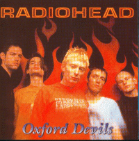

Oxford Devils
OD 666
Collection of B-sides, rarities and live tracks
<1> Banana Co.
<2> Talk Show Host
<3> Bishop's Robes
<4> Polyethylene (Parts 1 & 2)
<5> Pearly*
<6> A Reminder
<7> Melatonin
<8> Meeting in the Aisle
<9> Lull
<10> The Bends (4-track demo)
<11> Just (acoustic demo)
<12> Nice Dream (demo)
<13> Stupid Car (Tinnitus Mix)
<14> Stop Whispering (US Version)
<15> Blow Out (remix)
<16> Killer Cars (Mogadon Version)
<17> Talk Show Host (Nellee Hooper Mix from Romeo & Juliet)
<18> Talk Show Host (Romeo & Juliet Reprise)
Track 19 recorded for BBC2 Later... With Jools Holland 31/May/97
<19> No Surprises
Track 20 recorded for The Tonight Show with Jay Leno, USA 25/Jul/97
<20> Electioneering
Track 21 recorded for MTV's Most Wanted, Camden, London 18/Aug/95
<21> Nobody Does it Better
Type of recording : From CD
Quality : Excellent
Notes : Perfect quality - highly recommended! Companion to Oxford's Angels.